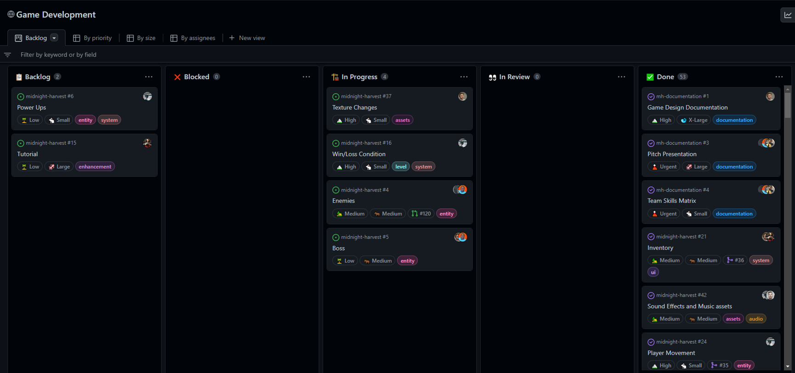
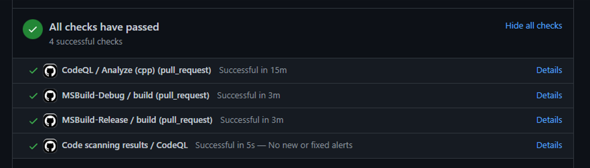
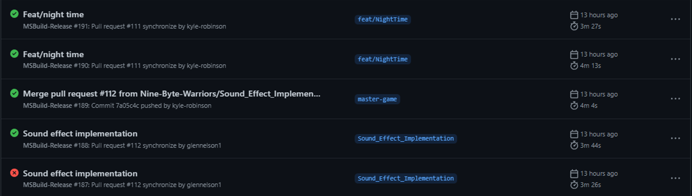

Project Information
- Language: C++
- Graphics API: DirectX 11
- Creation: Y3 S2
- Source URL: GitHub Page
Midnight Harvest
Created as part of my Group Game Development module in semester 2 of my third year. The aim of this project was to create a game using the engine that we had previously create, Roche. The game was created in a group of 10, with each member taking on a different role, where I was designated team leader. I was responsible for setting up the core systems, like Win32, DirectX, and ImGui, the UI system, engine architecture, and assigning tasks to members of the team. The game was created using various design patterns like the entity-component system, an event system, and multiple state machines which would handle game aspects like level switching and AI states. The game was created in 3 weeks, following the creation of the Roche engine which also took 3 weeks, and was overall a great learning experience for me as I was able to learn a lot about game development, and how to manage a team of people.
As for the core game loop, this involved purchasing seeds from the shop, and then planting them in the main farm area. When the player has planted enough crops, they can initiate the night phase, which will spawn the crops as enemies. The player must defeat all of the enemies which will spawn in waves, and then return to the shop to purchase more seeds. The type of enemy spawned will change based on the seed that is planted. More expensive seed packets will spawn stronger enemies but will also give the player more money when defeated. The game also features a boss fight, which is unlocked after the player has defeated 5 waves of enemies. The boss fight is a 1v1 battle against a giant corn enemy which the player must defeat to beat the game.
What Did I Learn?
As mentioned above, this project was a great learning experience for me as I was able to learn a lot about game development, and how to manage a team of people. I was able to learn a lot about the different design patterns that are used in game development, and how to implement them into a game engine. I was also able to learn a lot about how to manage a team of people, and how to assign tasks to each member of the team. The project was also a great opportunity to improve my understanding of GitHub where the aim was to improve my methods of managing the team. I created a project board for the team to use, which allowed for the easy assignment of tasks to each member of the team.

I also created a GitHub wiki page which allowed for the easy creation of documentation for the project, which was used to document the design patterns and features that were used in the project. This was all contained within the organization page that I created for the team, which meant that we were able to create multiple repositories for the project, which allowed for the easy separation of the engine and the game. I also spent a lot of time looking into continuous integration, which was managed through GitHub actions, such that when a pull request was made, the code would be built and tested automatically. This allowed for the easy detection of any bugs that were introduced into the codebase, and allowed for the easy merging of pull requests.
|  |  |
I also learned a lot on the method of how to best scope a project, and how to create a project plan which would allow for the easy completion of the project within the given time frame. For this, I first had to understand the strengths and weaknesses of everyone in the team, so that I could best assign feature implementations to each member of the team. Throughout the development of the game, I was able to make more informed decisions on how to best assign tasks to each member of the team, and how to best manage the team.
Future Additions
There are a few features that I would like to add to the game in the future, such as adding more levels, and add a few more enemies to the game. I would also like to add a few more features to the shop, such as the ability to purchase upgrades for the player. As we were limited to the time frame of the project, we were unable to fully implement AI state behaviours, and the projectile system. Examples of both of these systems are demonstrated in the video created for Roche, which can be found here.
Other than this, I would like to spend time with the other members of Nine Byte Warriors to try to further polish the game and work towards getting the it released on Steam. I would also like to try to get the game released on mobile platforms, such as Android and iOS, as I believe that the game would be a great fit for mobile devices, due to the simplicity of the game.